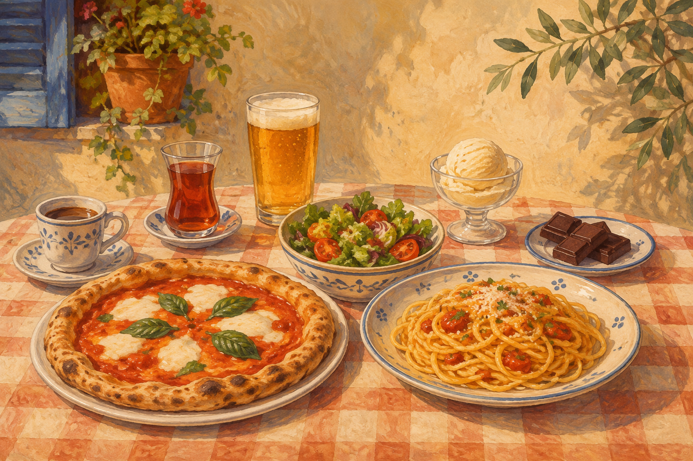

PRIME CONVERSAZIONI
Che cibi ti piacciono?
中文：你喜欢什么食物？学习谈论食物和饮料，并用不同强度表达喜欢或不喜欢。

RISCALDAMENTO E VOCABOLARIO
Cibi e bevande
Ascolta, ripeti e osserva il genere dei nomi.
il caffè
咖啡la pasta
意大利面il tè
茶il gelato
冰淇淋l’insalata
沙拉il cioccolato
巧克力la birra
啤酒DIALOGO
Hyun-woo e Ling
Tu interpreti Ling.
00:00点击按钮朗读意大利语
Hyun-woo: Ti piace la pizza, Ling?
中文：Ling，你喜欢披萨吗？
Ling: No, odio la pizza.
中文：不，我讨厌披萨。
Hyun-woo: Ti piace la pasta?
中文：你喜欢意大利面吗？
Ling: No, odio la pasta.
中文：不，我讨厌意大利面。
Hyun-woo: Che cibi ti piacciono?
中文：你喜欢什么食物？
Ling: Adoro il gelato e il cioccolato! Ti piacciono il gelato e il cioccolato?
中文：我非常喜欢冰淇淋和巧克力！你喜欢吗？
Hyun-woo: No, non mi piacciono.
中文：不，我不喜欢。
Ling: Che cibi ti piacciono?
中文：你喜欢什么食物？
Hyun-woo: Adoro la pizza.
中文：我非常喜欢披萨。
Ling: Quali bevande ti piacciono?
中文：你喜欢什么饮料？
Hyun-woo: Adoro la birra. Ti piace la birra?
中文：我非常喜欢啤酒。你喜欢啤酒吗？
Ling: Sì, adoro la birra!
中文：是的，我非常喜欢啤酒！
DA MEMORIZZARE
句型与固定表达
Ti piace + nome singolare?
Ti piace la pizza? — Sì, mi piace.
你喜欢披萨吗？——是的，我喜欢。Ti piacciono + nomi plurali?
Ti piacciono il gelato e il cioccolato? — No, non mi piacciono.
你喜欢冰淇淋和巧克力吗？——不，我不喜欢。Che cibi ti piacciono?
Mi piacciono la pizza e la pasta.
你喜欢什么食物？我喜欢披萨和意大利面。Quali bevande ti piacciono?
Mi piacciono il tè e il caffè.
你喜欢什么饮料？我喜欢茶和咖啡。ESERCIZI
Otto attività
1 · Riscaldamento — Cibi e bevande
Guarda ogni immagine e completa con la parola corretta.
1. ______
2. ______
3. ______
4. ______
5. ______
6. ______
7. ______
8. ______
2 · Vocabolario — Completa le risposte
1. Ti piace il caffè? No, ______ il caffè.
2. Ti piace la pasta? ______ la pasta.
3. Ti piace la birra? ______ la birra.
4. Ti piace l’insalata? Sì, ______ l’insalata.
3 · Dialogo — Leggi ad alta voce
Leggi il dialogo. Tu sei Ling.
4 · Abbina le frasi
Che cibi ti piacciono?Quali bevande ti piacciono?Mi piacciono la pizza e il gelato.Sì, mi piace.Quali bevande ti piacciono?La birra non mi dispiace.
5 · Riempi il dialogo
______ piacciono la pizza e la pasta.
Quali cibi ti ______?
______ piace il cioccolato?
______ bevande ti piacciono?
______, odio il caffè.
No, odio il ______.
Io ______ la Coca-Cola.
6 · Metti le parole in ordine
7 · Tocca a te fare domande
Chiedi al tuo insegnante: “Che cibi ti piacciono?” e “Quali bevande ti piacciono?”.
8 · Tocca a te rispondere
Rispondi parlando di te e usa almeno due espressioni diverse.
TOCCA A TE
Parliamone
1. Che cibi ti piacciono?
2. Quali bevande ti piacciono?
3. Quale cibo non ti piace?